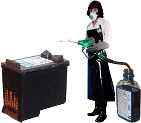

Как самому заправить струйный картридж?

Каждый человек, у которого хоть раз заканчивались чернила в картридже, явно хоть раз задумывался, а почему бы, не заправить самому? И это правильно ведь это несложно,
и сэкономит хорошую сумму на печати. Причем несложно заправить как черный, так и цветной картридж принтера. Если вы не хотите возиться с грязной работой, то лучше поставить систему
СНПЧ на
принтер или МФУ.
Стоимость
Стоимость покупки нового картриджа достаточно высока.
Стоимость заправки картриджа в специализированных конторах, конечно ниже чем стоимость нового картриджа.
Стоимость заправки картриджа самостоятельно самая низкая из всех и если Вы будете сами заправлять принтер это Вам обойдется в небольшую сумму. Как правило нужно купить
бутылочку чернил, или несколько, если картридж цветной и Вам этого хватит на долго. А чернила относительно не дорогие.
Сложность
Научится заправлять струйные принтеры, может каждый желающий купивший компьютер. В этом нет ничего сложного. В данной статье Вы в этом убедитесь.
Принцип работы струйного принтера и почему нужно вовремя заправлять
Печатают струйные принтеры по технологии, которая подразумевает использование специальных чернил. Эти чернила быстро высыхают при контакте с воздухом. В исправном картридже,
сопла наполнены чернилами. Чернила не выплескиваются сами из сопел, за счет физических свойств жидкости. Существует две технологии, благодаря которым осуществляется "испускание"
чернил из сопел. Первая базируется на принципе местного нагрева, и превращения жидкости в пар. Вторая базируется на пьезоэлектрическом эффекте. Если вовремя не заправить картридж,
то из-за того, что закончатся чернила, в сопла попадет воздух. Воздух при взаимодействии с чернилами приведет их к высыханию. Тогда произойдет закупорка сопел. Поэтому нужно
вовремя заправлять картридж свежей порцией чернил.)
Что необходимо
Чернила. Можно рекомендовать следующих производителей чернил - StarJet , ОСР, Poleram. Для черного картриджа понадобится одна бутылочка с чернилами. Если картридж цветной, то
понадобится, чаще всего 3, бутылочки с чернилами. Бутылочки могут быть, например, объемом в 200 мл.
Шприцы. В принципе, шприцы подойдут различные, но удобнее чтобы объем шприца был примерно равным объемы чернил в Вашем картридже.
Другое. Вам понадобится скотч, чтобы заклеить отверстия, в которые Вы будете заправлять чернила. Хотя обычно имеется наклейка на картридже, все же после отклеивания она часто
не выполняет условие достаточной герметичности, поэтому воспользуйтесь скотчем. Заправка принтера чернилами, особенно в первый раз, может оказаться достаточно грязным делом.
Лучше всего работать на нескольких газетах, которые после выкинуть. Также понадобится тряпочка или вата, для удаления излишков чернил.
Дрель. Может понадобится, если в картридже отсутствуют отверстия.
Порядок выполнения действий
Когда всё необходимое имеется и рабочее место подготовлено, приступаем непосредственно к заправке картриджа.
- Набираем в шприц необходимое количество чернил. На наклейке картриджа должна быть информации об объеме чернил, от нее и исходим.
- Снимите наклейку с картриджа;
- Если отверстья имеются, пропускаем этот пункт. Если отверстий нет, то берем дрель и сверлом с маленьким диаметром проделываем несколько отверстий в картридже. Местоположение
отверстий желательно расположить равномерно на всей площади картриджа, для равномерной последующей заправки.
- Вставляем шприц в отверстие в картридже и не спеша вводим чернила. Не стоит в одно отверстия вводить сразу весь объем чернил, лучше распределить чернила равномерно по всему
картриджу. Вводить глубоко не нужно, чтобы не повредить содержимое. Не глубже 1 сантиметра. Если картридж цветной. То заправлять следует свой цвет в соответствующе отверстие.
- После того, как ввели чернила, протираем поверхность, где расположены отверстия и заклеиваем скотчем или наклейкой, если она еще осталась для этого пригодной.
- Вставляйте картридж в принтер и произведите цикл очистки картриджа.
Замечания и дополнения
Заправлять картридж нужно быстро. Нельзя допускать долгого нахождения картриджа вне принтера.
Не прикасайтесь к соплам руками, да и вообще старайтесь чтобы сопла ни с чем не соприкасались. К контактным площадкам также не следует прикасаться, но при необходимости их можно
протереть спиртом.
Что делать, если картридж высох?
Для того чтобы восстановить работоспособность картриджа, когда тот вышел из строя (засох), нужно выполнить следующее. Выньте картридж из принтера и положите соплами вверх.
Возьмите специальную промывочную жидкость, её можно спросить в том месте, где Вы покупали чернила (например, фирмы Fullmark). Капните несколько капель на салфетку промывочной
жидкости и аккуратно положите салфетку на сопла. Подождите примерно час и вставьте картридж обратно в принтер. Произведите несколько циклов очистки картриджа. Работоспособность
должна восстановится. Если нет, выполните следующие действия. Налейте промывочной жидкости, в какую ни будь ёмкость не больших размеров. Немного, буквально чтобы уровень составил
1 или 2 сантиметра от дна ёмкости. Затем положите в ёмкость салфетку, а на салфетку картридж. Накройте емкость, чем ни будь чтобы жидкость не испарилась из ёмкости. Оставьте
картридж в ёмкости на день или сутки. По прошествии этого срока, достаньте картридж, и слегка касаясь сухой салфеткой его сопел, впитайте салфеткой промывочную жидкость с картриджа.
Вставьте картридж в принтер. Произведите несколько циклов очистки. В качестве промывочной жидкости нельзя использовать бытовые растворители, так как Вы можете повредить картридж,
если Вы решили не использовать специальной жидкости, то можете попробовать обычную воду. Вода должна быть как можно чище. В идеале дистиллированной водой.
Почему после заправке из картриджа вытекают чернила?
Если Вы заправили картридж и заклеили отверстия ввода чернил, а из сопел обильно льются чернила, это может свидетельствовать о том, что Вы не плотно заклеили заправочные отверстия.
Или же причиной сему может быть повреждения самого корпуса картриджа, то есть его герметичности.
Что делать, если после заправки принтер печатает не достаточно качественно?
Произведите несколько циклов очистки картриджа.
Если все выполнено правильно, то принтер снова печатает, стоимость отпечатков получилась небольшой. Поэтому самому заправлять картриджи выгодно и несложно, в чем Вы убедились в ходе
данной статьи.
Следующая статья:
Как выбрать наушники для компьютера.